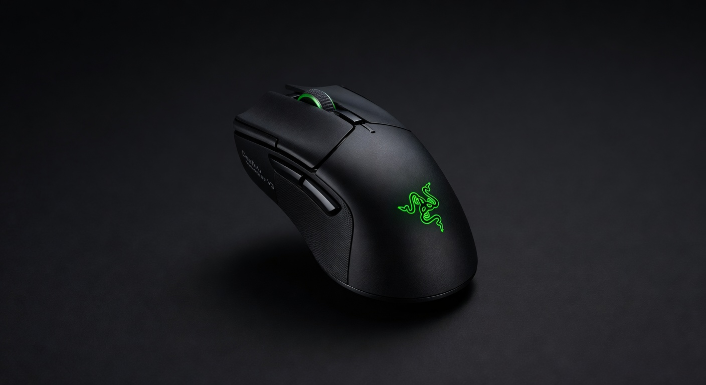
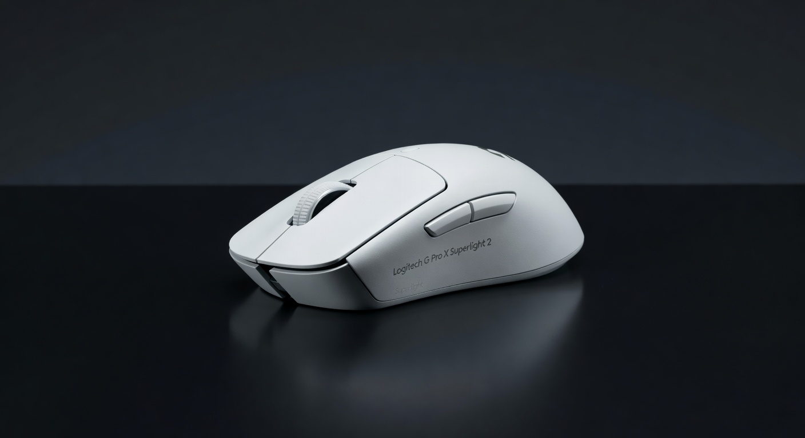

As an Amazon Associate I earn from qualifying purchases. Links below may earn us a commission at no extra cost to you.
Razer DeathAdder V3 vs Logitech G Pro X Superlight 2: Is $90 More Worth It?
The DeathAdder V3 at $69 is the best wired gaming mouse at its price. The G Pro X Superlight 2 at $159 is arguably the best gaming mouse period — the one actual tournament players use. The question isn't which is better. It's whether the gap is worth $90 to you specifically.

Razer DeathAdder V3
~$69
VS

Logitech G Pro X Superlight 2
~$159
Quick Verdict
Superlight 2 wins on performance; DeathAdder V3 wins on value
The G Pro X Superlight 2 is the better mouse: HERO 2 sensor is the most accurate available, wireless removes cable drag, and 60g without a honeycomb shell is remarkable. But the DeathAdder V3 at $69 wired has a legitimately excellent 30K sensor that's better than most mice at 2× the price. Unless you're playing at a level where 1% performance gains matter, the DeathAdder V3 is the smarter purchase.
Head-to-Head: Category by Category
Sensor Accuracy
G Pro X Superlight 2
Logitech's HERO 2 sensor is measurably the most accurate gaming sensor on the market — zero smoothing, zero acceleration, consistent tracking at any speed. Razer's Focus Pro 30K optical sensor in the DeathAdder V3 is also excellent — top-tier for wired mice. In practice, 99.9% of players would never notice the difference. Both sensors are beyond what skill can exploit.
Weight
G Pro X Superlight 2
60g wireless vs 59g wired — nearly identical on the scale, but the Superlight 2 achieves it with a solid shell (no honeycomb). The DeathAdder V3 is also 59g, also a solid shell — Razer matched Logitech here remarkably well for a mouse that costs less than half as much. This is legitimately impressive.
Wireless vs Wired
G Pro X Superlight 2
The Superlight 2's LIGHTSPEED wireless delivers 1ms polling — functionally identical to wired. The absence of cable drag is a real, tangible improvement that veteran players immediately notice. The DeathAdder V3's cable is flexible and low-resistance, but it is still a cable. This is the most genuine performance gap between the two.
Click Feel
DeathAdder V3
Razer's optical switches in the DeathAdder V3 are among the most satisfying clicks in gaming — precise, consistent, zero debounce delay, rated 90 million clicks. The Superlight 2's mechanical switches are also excellent but feel slightly less defined. Most players prefer Razer's optical switch feel. Subjective, but worth noting.
Value
DeathAdder V3 — easily
$69 wired for a 59g mouse with a 30K optical sensor and optical switches is extraordinary value. The $159 Superlight 2 is priced at a premium because it's the best — not because the DeathAdder V3 is lacking. For most players, the DeathAdder delivers 95% of the performance at 43% of the cost.
Pro Usage
G Pro X Superlight 2
The Superlight 2 is used by more active professional esports players than any other mouse in 2025–2026. That's not a marketing claim — it's verified by prosettings.net tracking. DeathAdder shapes are popular with pros too, but the Superlight 2 dominates tournament settings. If that matters to you, there it is.
Spec Comparison
| Spec | Razer DeathAdder V3 | Logitech G Pro X Superlight 2 |
|---|---|---|
| Price | ~$69 | ~$159 |
| Sensor | Focus Pro 30K Optical | HERO 2 (32K) |
| Weight | 59g | 60g |
| Connection | Wired USB | LIGHTSPEED Wireless 1ms |
| Shell | Solid (no honeycomb) | Solid (no honeycomb) |
| Switches | Razer Optical (90M clicks) | Mechanical |
| Battery | N/A (wired) | 70 hours |
| Shape | Ergonomic right-handed | Ambidextrous |
| RGB | Yes (Chroma) | No (intentional) |
Which Should You Buy?
Razer DeathAdder V3
~$69
Best for: Best value wired · Right-hand ergonomic grip · Optical switch feel
🛒 Check Price on Amazon
Full Review →
Logitech G Pro X Superlight 2
~$159
Best for: No-compromise wireless · Pro-level play · Cable-free desk
🛒 Check Price on Amazon
Full Review →
More Mouse Guides & Comparisons
Frequently Asked Questions
For serious competitive FPS players who play daily — yes. The HERO 2 sensor, 60g solid shell, and LIGHTSPEED wireless are each class-leading, and the combination is objectively the best performance package available. For casual gamers or those who don't play FPS competitively, the DeathAdder V3 at $69 delivers 95% of the performance and the extra $90 doesn't improve your aim enough to notice.
Excellent. The Focus Pro 30K optical sensor is better than what most mice at 2× the price offer. At 59g with a solid shell and optical switches, it punches well above its $69 price class. The only legitimate limitations are that it's wired and right-handed only. If you're a right-handed gamer who doesn't mind cables, it's one of the best values in gaming peripherals.
At the level of Logitech LIGHTSPEED (1ms polling), no — it's functionally wired. The actual performance difference is zero for most play. What matters is cable drag: even a flexible cable creates subtle resistance on flicking movements, which some players find affects muscle memory. If you've gamed wired for years and feel fine, the $90 premium for wireless is hard to justify. If you've ever been annoyed by cable management, it's worth it.
The Logitech G Pro X Superlight 2 leads professional usage in FPS esports in 2025-2026. Other common choices include the Razer Viper V3 Pro, Logitech G303 Shroud Edition, and various Finalmouse options. The DeathAdder shape has long been popular with pros but the V3's specific variant is less dominant in tournament settings than Logitech's pro line. Source: prosettings.net tracks real pro player mice.
Affiliate Disclosure: As an Amazon Associate I earn from qualifying purchases. Prices may vary.